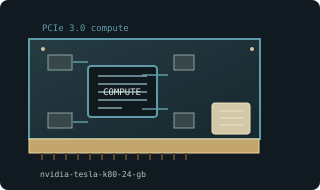

[ GPU COMPUTE ACCELERATORS // IDENTIFIED COMPONENT ]
NVIDIA Tesla K80 24 GB compute accelerator
Dual GK210 / Kepler HPC accelerator, 2014. This entry describes one identifiable model or reference configuration; related products and OEM variants are distinguished below.

MODEL / VARIANT: Memory belongs to two independent GPU devices, not one 24 GB pool. OEM server tray, wiring, and supported driver/CUDA stack vary.
Recorded specifications
| Cataloged product | NVIDIA Tesla K80 24 GB compute accelerator |
|---|---|
| Generation / core | Dual GK210 / Kepler HPC accelerator, 2014 |
| Core & memory | Two GK210 GPUs; 4992 CUDA cores aggregate; 24 GB GDDR5 total (12 GB per GPU) with ECC; up to 480 GB/s aggregate bandwidth; 300 W board power. |
| Host interface & I/O | PCI Express 3.0 x16 passive dual-slot accelerator; no display outputs; reference EPS12V 8-pin power and server-directed airflow required. |
| Variant boundary | Memory belongs to two independent GPU devices, not one 24 GB pool. OEM server tray, wiring, and supported driver/CUDA stack vary. |
| Archival identification | Record complete part number, PCB revision, BIOS/firmware, device/subsystem IDs, driver version, adapters, condition, and source-document edition. |
Compatibility, service & archival notes
NVIDIA board specification identifies passive cooling; 24 GB is aggregate, 12 GB per GPU.
Never run without adequate directed server airflow. Verify EPS12V pinout (do not assume PCIe 8-pin interchangeability), host power and ECC/driver support.
- Check signaling, slot keying, lane width, power pinout, board length, case clearance, airflow, and PSU requirements for the exact item.
- Use drivers for the device ID and target OS; preserve installer/firmware copies and record their source before updates.
- Do not power hardware with corrosion, cracks, damaged connectors, obstructed cooling, or suspected shorts; document condition before bench testing.
Manufacturer, model & standards sources
- NVIDIA Tesla K80 board specificationModel-specific product or interface reference; compare with the physical label and exact board revision.
- Tesla K80 model specificationsModel-specific product or interface reference; compare with the physical label and exact board revision.
- PCI Express specificationsModel-specific product or interface reference; compare with the physical label and exact board revision.
Reference specifications do not supersede the board vendor manual and nameplate. Performance figures are vendor claims unless identified as measured results.